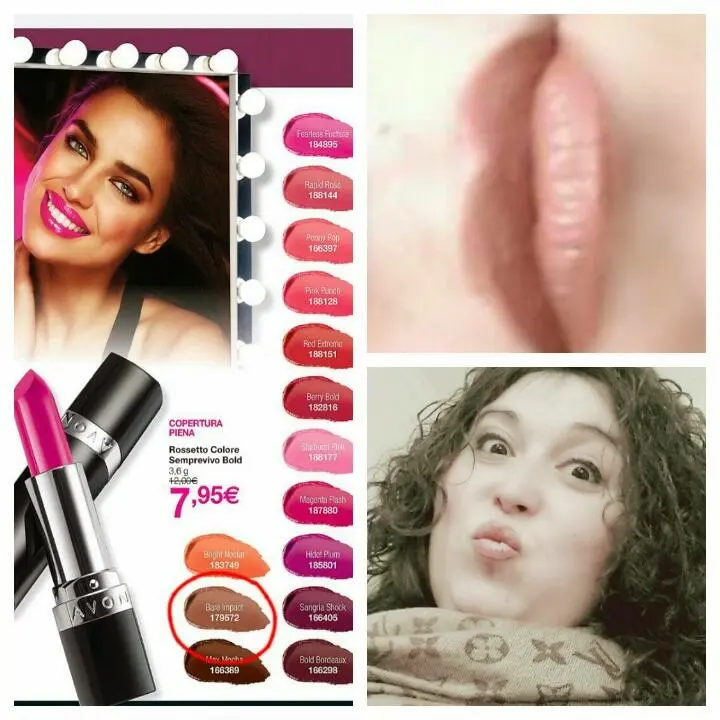

Rossetti my love..
Ciao a tutti e a tutte.
come va?
Oggi voglio parlarvi di rossetto, in particolare rossetto Avon.
Beh Sì, mi piace questa marca. Per molti non è il top ma per me qualità-prezzo va bene. Non è poi così scadente come molti vogliono far credere anzi..
Vi mostro direttamente il rossetto provato questa mattina.

Ebbene Sì sono io ahahahahDopo tutte le cure per la bronchite eccomi di nuovo,quasi, in forma.Torniamo al rossetto, è molto meglio :PQuesto rossetto è uno delle ultime novità dell'Avon.
• Rossetto colore semprevivo Bold
la tonalità è quella cerchiata nel collage ovvero "Bare Impact".
Ok,detto ciò vi dico la mia...
Rossetto molto secco, dopo un paio d'ore si asciuga e non è molto idratante.
Il mio voto è un 6.
(Sì, voglio dare un voto ai rossetti che uso.
Non per professionalità e ne per esaltazione ma bensì come parere personale e uso di molti prodotti di questo marchio.
Non sono qui a dire quindi, che sono tutti così ma questo rossetto non è tra i miei preferiti di questo brand.)
Tuttavia comunque confermo il mio voto '6' per la tonalità sicuramente, colore molto caldo nonostante il colore quasi nude.
Molto carino e accostatile a matite contorno labbra marroncino, nude, anche un rosa tenue.
Io l'ho mixato a un marroncino e mi è piaciuto.
Ok, ditemi la vostra se lo avete provato o vorrete provarlo.
Un bacio :*